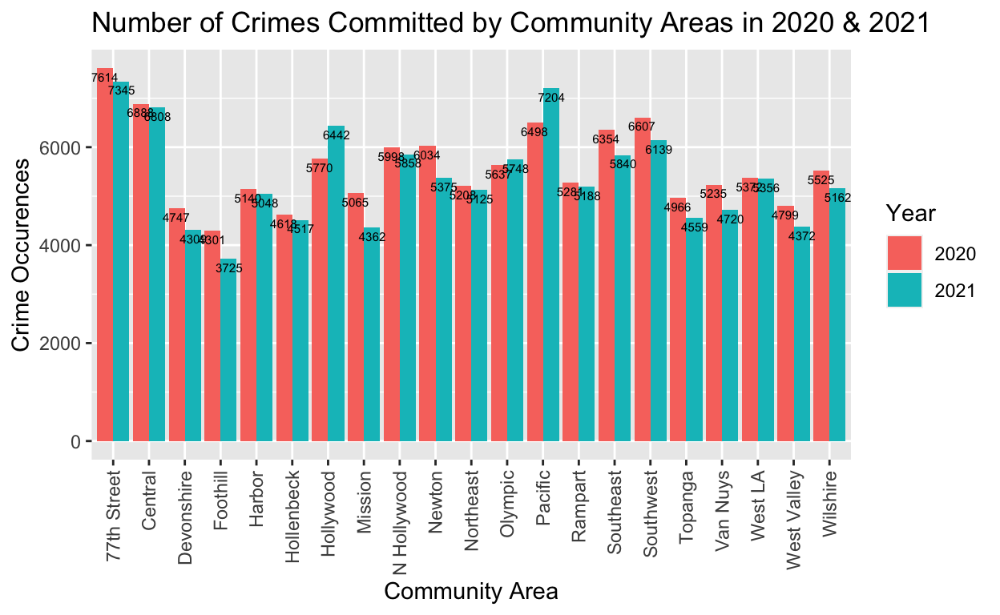
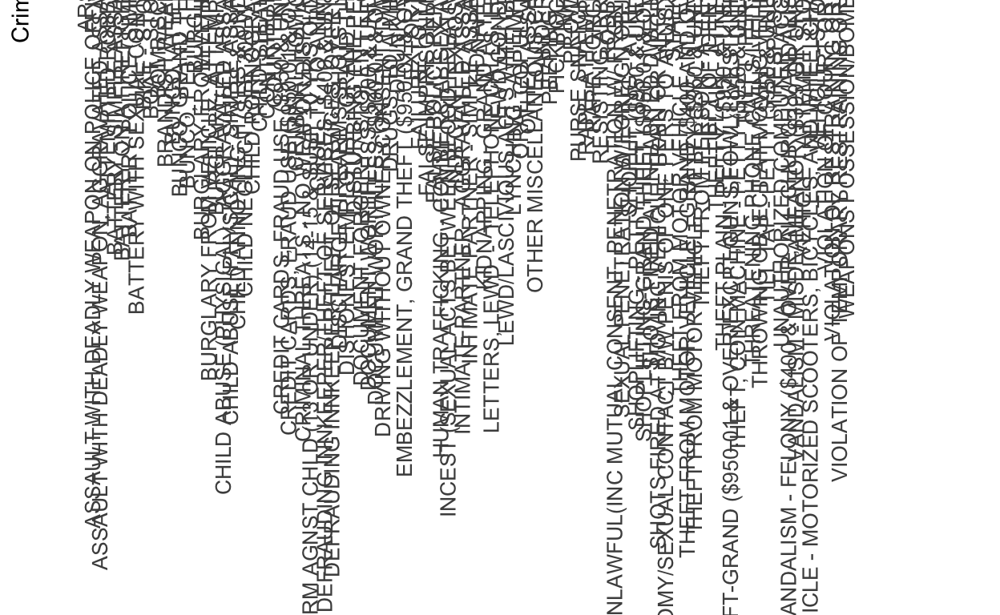

Introduction With Covid-19, 2020 was a tumultuous year that had unexpected outcomes. In recent news, there was talk about the year’s crime rates changing in unexpected ways. Though the reasons for the change are unclear, 2020 had an uptick in violent crimes and a decrease in crimes having to do with the public. Every armchair forensic psychologist has said it is due to the quarantine measures. People in constant close quarters makes violent crime more likely and social distancing made crimes that need more social interaction not as likely. In 2021, when covid restrictions were lifting, did the trend continue? In comparison to 2020, did 2021 have similar types of crime? How many crimes occurred in the same seven month period for 2020 and 2021?
The LA area was one of the first places that was hit by the pandemic and a hotspot for the Delta variant. In such a sprawling city, which communities had the highest number of crimes? What was the count in 2021? What were the crimes committed in the communities that did see an increase in 2021?
In this paper, I am exploring the crime count and composition of the city of Los Angeles. Out of the community area with the unexpectedly highest crime increase in 2021, what types of crime occurred? I want to see if the crime composition might aid in accounting for the increase in crime, which is opposite of the trend.
Data I am looking at the data set “Crime in Los Angeles Data from 2020 to Present” from Kaggle.com. I chose this data set because I wanted to know if 2021 was comparable to 2020 after I had heard that 2020 had an alarming increase in murders and no one knows exactly if it could be chalked up only to the pandemic. Along with that interest, the data set was updated regularly and covered a recent time period.
Set Up
First I changed echo to TRUE and loaded in the libraries tidyverse and stringr in order to run ggplot, dplyr, and read the csv. Next I read in the csv file and viewed it to examine the data.
knitr::opts_chunk$set(echo = TRUE)
library(tidyverse)
library(stringr)
LAcrime <- read_csv("Crime_Data_from_2020_to_Present.csv")
head(LAcrime)
# A tibble: 6 × 28
DR_NO `Date Rptd` `DATE OCC` `TIME OCC` AREA `AREA NAME`
<chr> <chr> <chr> <chr> <chr> <chr>
1 010304468 01/08/2020 12:… 01/08/2020 1… 2230 03 Southwest
2 190101086 01/02/2020 12:… 01/01/2020 1… 0330 01 Central
3 201220752 09/16/2020 12:… 09/16/2020 1… 1230 12 77th Street
4 191501505 01/01/2020 12:… 01/01/2020 1… 1730 15 N Hollywood
5 191921269 01/01/2020 12:… 01/01/2020 1… 0415 19 Mission
6 200100501 01/02/2020 12:… 01/01/2020 1… 0030 01 Central
# … with 22 more variables: Rpt Dist No <chr>, Part 1-2 <dbl>,
# Crm Cd <dbl>, Crm Cd Desc <chr>, Mocodes <chr>, Vict Age <dbl>,
# Vict Sex <chr>, Vict Descent <chr>, Premis Cd <dbl>,
# Premis Desc <chr>, Weapon Used Cd <dbl>, Weapon Desc <chr>,
# Status <chr>, Status Desc <chr>, Crm Cd 1 <dbl>, Crm Cd 2 <dbl>,
# Crm Cd 3 <dbl>, Crm Cd 4 <lgl>, LOCATION <chr>,
# Cross Street <chr>, LAT <dbl>, LON <dbl>Cleaning the Data Set First, I wanted to narrow my focus to only the variables I would be looking at. I selected the columns at needed and excluded all the other variables. The data set had variables with spaces in between words and I wanted to replace them with one word labels for ease of coding. I did this by by renaming them.
Next, I checked for any NAs or null values.On my first attempt, I removed no nulls, but a few NAs. However, after narrowing my column variables further, there were neither nulls, nor NAs to remove. I wanted to keep the code to show how I would have removed them.
Next, I separated the date of crime occurrence (DateOcc) variable into three variables: day, month, and year of crime occurrence. Time of occurrence is separate variable in the dataset. I also cleaned up the strings by removing the incorrect time (12:00:00 AM) attached to the date of crime occurrence variable. This was so that I could investigate 2020 and 2021 without being encumbered by unnecessary information like the incorrect time when transforming the data. This would also be useful for future inquiries into monthly or time of day crime occurrences.
Finally, since 2021 is not completed yet, I needed to compare 2020 and 2021 in an equal time window and the data set needed to reflect that. I decided to focus on the first seven months of each year to answer my questions by filtering out rows August and later. Each year only has data from January 1st to July 31st.
LAcrime2 <- LAcrime %>%
select(`DATE OCC`, `AREA NAME`, `Crm Cd`, `Crm Cd Desc`) %>%
rename(DateOcc=`DATE OCC`, AreaName=`AREA NAME`, CrmCd=`Crm Cd`, CrmDesc=`Crm Cd Desc`)#Selecting columns needed & renaming them without spaces in column name.
any(is.na(LAcrime2))
[1] FALSE[1] FALSE$DateOcc
[1] 0
$AreaName
[1] 0
$CrmCd
[1] 0
$CrmDesc
[1] 0LAcrime3 <- na.exclude(LAcrime2)#Get rid of NAs and nulls
#Breaking up the dates into separate columns to better order the data and focus on the observations with regard to the year
LAcrime4 <- LAcrime3 %>%
separate(DateOcc, sep="/", into = c("OCCmonth", "OCCday", "OCCyear")) %>%
separate(OCCyear, sep=" ", into = c("OCCyear", "1","2")) %>%
select(-"1", -"2")
LAcrime5 <- filter(LAcrime4,!(OCCmonth>= "08"))#Creating the same time period window for 2020 as 2021. 7 months, Jan 1st-July 31st.
Reshaping the Variables The next step in cleaning the data, I needed to shape the variables I’m using to fit the scope of my project.I focused on the crime description variable and the area variable.
After examining the crime description variable. It was categorical data with a lot of unique values. I couldn’t gather meaningful data from such a large variable, so I decided to focus on the top ten crimes overall. First, filtered the crime description variable into two groups by year. For year 2020, I gathered the count of for each crime description and rearranged it to show the most committed crimes. I extracted the top ten and repeated the process for year 2021. Lastly, I attached a year column to the data sets and combined the two data sets together making sure the year column was not read as a continuous variable for plotting later.
I repeated this process with the area variable to count the number of crimes committed by neighborhood. Though, I did not limit it to the top ten neighborhoods because 21 areas could be plotted more easily than the number of types of crimes.
Finally, after exploring those two variables, I found that the Pacific area had the highest increase in crime and was in the top ten of areas affected by crime. So, I created a data set that counted the number of crimes by crime type committed in the Pacific area.Though the full list of crimes was interesting (and included the code below with the “###” comment), I had to focus on the top ten to better handle the data in plotting.
#Top 10 crimes
n_distinct(LAcrime5$CrmDesc) #Check
[1] 132crmdesc2020_1 <- LAcrime5 %>%
filter(OCCyear=="2020") %>%
count(CrmDesc) %>%
arrange(desc(`n`)) %>%
rename(count=`n`) #Count of crimes in 2020 added to this data set
Top10_2020 <- crmdesc2020_1[1:10, ] #This object is the Top 10 crime types for 2020
crmdesc2021_1 <- LAcrime5 %>%
filter(OCCyear=="2021") %>%
count(CrmDesc)%>%
arrange(desc(`n`))%>%
rename(count=`n`) #Count of crimes in 2021 added to this data set
Top10_2021 <- crmdesc2021_1[1:10, ]#This object is the Top 10 crime types for 2021
#Putting a column of the years back on to data set correctly
year2020 <- c(rep(2020,10))
year2021 <- c(rep(2021,10))
LAcrimeTop10_1 <- cbind(Top10_2020, year = year2020)
LAcrimeTop10_2 <- cbind(Top10_2021, year = year2021)
#Combining these data sets into one Top 10 across both years.
LAcrimeTop10_3 <- rbind(LAcrimeTop10_1, LAcrimeTop10_2)
LAcrimeTop10_3$year <- as.factor(LAcrimeTop10_3$year) #Changing the new year column into a factor, so it isn't read as a continuous variable for the plots later
#Community Areas
n_distinct(LAcrime5$AreaName)#Check
[1] 21Area2020 <- LAcrime5 %>%
filter(OCCyear=="2020") %>%
count(AreaName) %>%
arrange(desc(`n`))%>%
rename(count=`n`)#Count of Area crimes in 2020 added to this data set
Area2021 <- LAcrime5 %>%
filter(OCCyear=="2021") %>%
count(AreaName)%>%
arrange(desc(`n`)) %>%
rename(count=`n`)#Count of Area crimes in 2021 added to this data set
yearArea20 <- c(rep(2020,21))
yearArea21 <- c(rep(2021,21))#Putting a column of the years back on to data set correctly
LAcrime_Area1 <- cbind(Area2020, year = yearArea20)
LAcrime_Area2 <- cbind(Area2021, year = yearArea21)
#Combining these data sets into one Crime Area set across both years.
LAcrime_Area3 <- rbind(LAcrime_Area1, LAcrime_Area2)
LAcrime_Area4 <- LAcrime_Area3 %>%
arrange(AreaName)#Arranged to show the most crimes vs the area they happened in
LAcrime_Area4$year <- as.factor(LAcrime_Area4$year) #Changing the new year column into a factor, so it isn't read as a continuous variable for the plots later
#Crime Types in the Pacific Area
Pacific2020 <- LAcrime5 %>%
select(OCCyear, AreaName, CrmDesc) %>%
filter(OCCyear=="2020" & AreaName== "Pacific") %>%
count(CrmDesc) %>%
arrange(desc(`n`))%>%
rename(count=`n`)#Count of crimes in the Pacific area in 2020 added to this data set
Pacific2020_1 <- Pacific2020[1:10, ]#This object is the Pacific crime types for 2020
Pacific2021 <- LAcrime5 %>%
select(OCCyear, AreaName, CrmDesc) %>%
filter(OCCyear=="2021" & AreaName== "Pacific") %>%
count(CrmDesc) %>%
arrange(desc(`n`))%>%
rename(count=`n`)#Count of crimes in the Pacific area in 2021 added to this data set
Pacific2021_1 <- Pacific2021[1:10, ]#This object is the Pacific crime types for 2021
#Putting a column of the years back on to data set correctly
yearPacific20 <- c(rep(2020,10))
yearPacific21 <- c(rep(2021,10))
LAcrimePacific1 <- cbind(Pacific2020_1, year = yearPacific20)
LAcrimePacific2 <- cbind(Pacific2021_1, year = yearPacific21)
#Combining these data sets into one Pacific crimes set across both years.
LAcrimePacific3 <- rbind(LAcrimePacific1, LAcrimePacific2)
LAcrimePacific3$year <- as.factor(LAcrimePacific3$year)#Changing the new year column into a factor, so it isn't read as a continuous variable for the plots later
### Full crime description list with regard to the Pacific data set
FullPacific2020 <- LAcrime5 %>%
select(OCCyear, AreaName, CrmDesc) %>%
filter(OCCyear=="2020" & AreaName== "Pacific") %>%
count(CrmDesc) %>%
arrange(desc(`n`))%>%
rename(count=`n`)#Count of crimes in the Pacific area in 2020 added to this data set
FullPacific2021 <- LAcrime5 %>%
select(OCCyear, AreaName, CrmDesc) %>%
filter(OCCyear=="2021" & AreaName== "Pacific") %>%
count(CrmDesc) %>%
arrange(desc(`n`))%>%
rename(count=`n`)
FullyearPacific20 <- c(rep(2020,98))
FullyearPacific21 <- c(rep(2021,91))
FullLAcrimePacific1 <- cbind(FullPacific2020, year = FullyearPacific20)
FullLAcrimePacific2 <- cbind(FullPacific2021, year = FullyearPacific21)
#Combining these data sets into one Pacific crimes set across both years.
FullLAcrimePacific3 <- rbind(FullLAcrimePacific1, FullLAcrimePacific2)
FullLAcrimePacific3$year <- as.factor(FullLAcrimePacific3$year)
###
Plots
#Plot 1: shows the crime count difference between 2020 and 2021
ggplot(LAcrime5, aes(x=OCCyear))+
geom_bar()

Plot1:
I wanted to confirm with the first plot that 2020 was overall had more crime than 2021 for the first seven months.The bar graph supports notion and allows me to move on to my questions about this data set.I would have preferred to also have a percentage change plot for each type of crime along with this one before moving on to the plots that answer my questions, but it required the rows be connected to the previous row. That may apply to percent changes from consecutive days, but doesn’t to categorical data like crime descriptions.
#Plot2: shows the top 10 crimes across both 2020 & 2021
ggplot(LAcrimeTop10_3, aes(x= year,y=count, fill= CrmDesc))+
geom_bar(position="dodge", stat="identity")+
geom_text(aes(label = CrmDesc), size = 3, hjust = 1.01, position = position_dodge(.9),angle = 90, colour = "white")+
labs(title="Number of Crimes Committed by Type in 2020 & 2021",
x ="Year", y = "Crime Occurences", fill ="Crime Type")

Plot 2:
This graph shows the top ten crime types from 2020 to 2021. The types of crimes in the top ten didn’t change from year to year. So the idea that all types of violent crimes in general increased in the top ten. However, besides Assault with a Deadly Weapon, 2020 had more occurrences of violent crimes. Though the general trend is a decrease in occurrences between the two years, crimes like vandalism and vehicle theft went up in 2021.
#Plot 3: shows the crime count by Area across both 2020 & 2021
ggplot(LAcrime_Area4, aes(x=AreaName, y=count, fill= year))+
geom_bar(position="dodge", stat="identity")+
geom_text(aes(label = count),size=2, vjust = 1.5,position = position_dodge(.95), colour = "black")+
theme(axis.text.x = element_text(angle = 90, vjust = 0.5, hjust=1))+
labs(title="Number of Crimes Committed by Community Areas in 2020 & 2021",
x ="Community Area", y = "Crime Occurences", fill ="Year")

Plot 3:
This plot demonstrates the crime occurrences between by community area. The highest is 77th Street, but the change from year to year is showcases the more general trend downwards. The highest increase from 2020 to 2021 was in the area of Pacific moving it from the fourth highest in 2020 to second in 2021.This is interesting that Pacific moved up in the crime rankings, but what were the crimes committed when it increased in rank?
#Plot4: shows the crime count in the Pacific area specifically
ggplot(LAcrimePacific3, aes(x= CrmDesc,y=count, fill = year))+
geom_bar(position="dodge", stat="identity")+
theme(axis.text.x = element_text(angle = 90,size=10, vjust = 0.5, hjust=1))+
labs(title="Types of Crimes Committed in the Pacific Area in 2020 & 2021",
x ="Crime Type", y = "Crime Occurences", fill ="Year")

Plot 4:
This plot expresses the Pacific area’s breakdown of crime types in this neighborhood. It shows crimes like that vehicle thefts and burglary increased in 2021 like the general top ten had. Identity theft and grand theft from a vehicle rose into the top ten in 2021. In Pacific, the violent crimes stayed fairly even except Assault with a Deadly Weapon, but this is in line with the general trend for Assault with a Deadly Weapon even if other violent crimes decreased.
Extra Plot: This Plot plots the extra code looking at all crime types happening in the Pacific region not only the top 10.
#Plot4: shows the crime count in the Pacific area specifically
ggplot(FullLAcrimePacific3, aes(x= CrmDesc,y=count, fill = year))+
geom_bar(position="dodge", stat="identity")+
theme(axis.text.x = element_text(angle = 90,size=10, vjust = 0.5, hjust=1))+
labs(title="Types of Crimes Committed in the Pacific Area in 2020 & 2021",
x ="Crime Type", y = "Crime Occurences", fill ="Year")

Conclusion
The data supports the idea that violent crimes increasing was at least linked to the influence of 2020. The only outlier to this conclusion is Assault with a Deadly Weapon that rose even more in 2021.The increase in smaller, more public facing crimes in 2021 aids the notion that with the opening up of society and business that people would commit more of those types of crimes now that they can move about more freely. Looking at the anomaly of Pacific showed that the increase in crimes this year was not because of an increase in any specific crime. All the crimes that appeared in the Pacific’s top ten occurred in the general top ten except for grand theft of a motor vehicle. I do not believe the increase in this crime alone can explain the increase in Pacific’s crime.
Further research needs to be done to show the crime rates change over time. If other factors besides the lifting pandemic procedures temporally affected the rate like laws or financial strain. Another search with data of previous years would edify the results found here to support the idea that 2020 is an anomaly.
Reflection
This project was definitely humbling. It has shown the places where I need to improve my R skills. This is not nearly a strong analysis that I wanted it to be. I wanted to include covid data to support my understanding of how quarantine influenced crime. There were graphs I wanted to use like the percent change plots. I wanted to do more than just bar graphs, but struggled to figure out how to make like pie charts work with where I wanted to put my variables.
I also wanted to do some analyses that weren’t just reliant on descriptive stats. How would I have known that Pacific’s 2020 to 2021 Simple Battery crime counts were not significantly different? Also, not having continuous data prevented me from using a plethora of graphs that would have been interesting.Also, I didn’t use loops and that would have been helpful.
The most time-consuming aspect was cleaning the data and make sure it was cleaned in a way that fit the scope of my questions. The next steps would be to figure out if the conclusions I found were in agreement with the greater trends over more than just 2020 and 2021. I could make claims that don’t apply when you zoom out.
Overall, I think I could do better and I have learned my lesson that you cannot procrastinate on coding.
Bibliography “🌆 Crime in Los Angeles Data from 2020 to Present | Kaggle.” Accessed August 29, 2021. https://www.kaggle.com/susant4learning/crime-in-los-angeles-data-from-2020-to-present. Cédric Scherer. “A Quick How-to on Labelling Bar Graphs in Ggplot2.” Accessed August 29, 2021. https://www.cedricscherer.com/2021/07/05/a-quick-how-to-on-labelling-bar-graphs-in-ggplot2/. Arthur, Rob, and Jeff Asher. “What Drove the Historically Large Murder Spike in 2020?” The Intercept (blog), February 21, 2021. https://theintercept.com/2021/02/21/2020-murder-homicide-rate-causes/. RStudio Community. “Converting Dates (Year - Month - Day) to 3 Separate Columns (Year , Month , Day) - Tidyverse,” May 18, 2018. https://community.rstudio.com/t/converting-dates-year-month-day-to-3-separate-columns-year-month-day/8585/5. Edureka Community. “Counting the Frequency of Unique Values - R.” Accessed August 29, 2021. https://www.edureka.co/community/4500/counting-the-frequency-of-unique-values-r. Stack Overflow. “Dataframe - Dply: Order Columns Alphabetically in R.” Accessed August 29, 2021. https://stackoverflow.com/questions/29873293/dply-order-columns-alphabetically-in-r. Learning R. “Ggplot2: Barplots,” March 16, 2009. https://learnr.wordpress.com/2009/03/17/ggplot2-barplots/. Holtz, Yan. “Grouped, Stacked and Percent Stacked Barplot in Ggplot2.” Accessed August 29, 2021. https://www.r-graph-gallery.com/48-grouped-barplot-with-ggplot2.html. Datanovia. “How to Change GGPlot Legend Size : The Best Reference,” January 2, 2019. https://www.datanovia.com/en/blog/how-to-change-ggplot-legend-size/. Sebastian Sauer Stats Blog. “How to Plot a ‘percentage Plot’ with Ggplot2.” Accessed August 29, 2021. https://sebastiansauer.github.io/percentage_plot_ggplot2_V2/. Stack Overflow. “How to Remove Unique Entry and Keep Duplicates in R.” Accessed August 29, 2021. https://stackoverflow.com/questions/32259620/how-to-remove-unique-entry-and-keep-duplicates-in-r. “Plot One Variable: Frequency Graph, Density Distribution and More - Articles - STHDA.” Accessed August 29, 2021. http://www.sthda.com/english/articles/32-r-graphics-essentials/133-plot-one-variable-frequency-graph-density-distribution-and-more/. “Quick-R: Merging.” Accessed August 29, 2021. https://www.statmethods.net/management/merging.html.